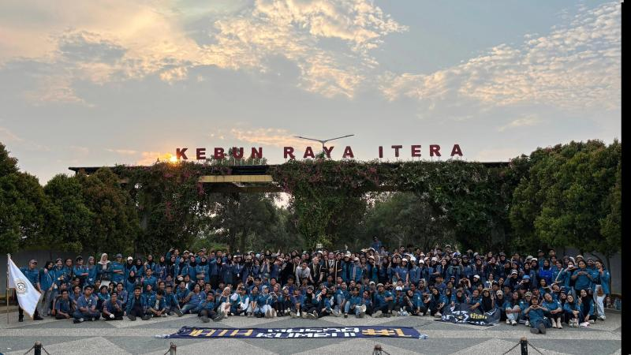
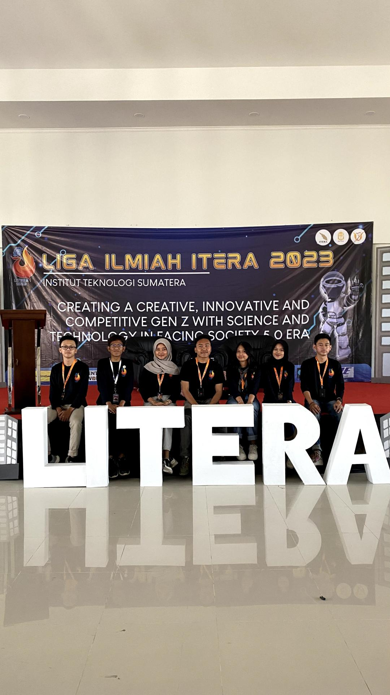

Organizational Experience
Data Science Student Association – Institut Teknologi Sumatera
Staff of Entrepreneurship Division
Jan 2023 – Nov 2024

- Collaborated in student development programs, data literacy training, and entrepreneurship initiatives.
- Coordinated organizational activities, developed value-added programs, and promoted increased member participation and independence.
Campus Ambassador Program – Institut Teknologi Sumatera
Staff of Operational Division
Jul 2022 – Nov 2022

- Managed arts and cultural activities to support a positive institutional image.
- Coordinated technical arrangements and operational requirements during event execution.
Scientific League – Institut Teknologi Sumatera
Staff of Creative Division
Oct 2023 – Dec 2023

- Contributed to the development of visual concepts and creative ideas based on science and technology.
- Supported event success through engaging design, documentation, and management of publication media.